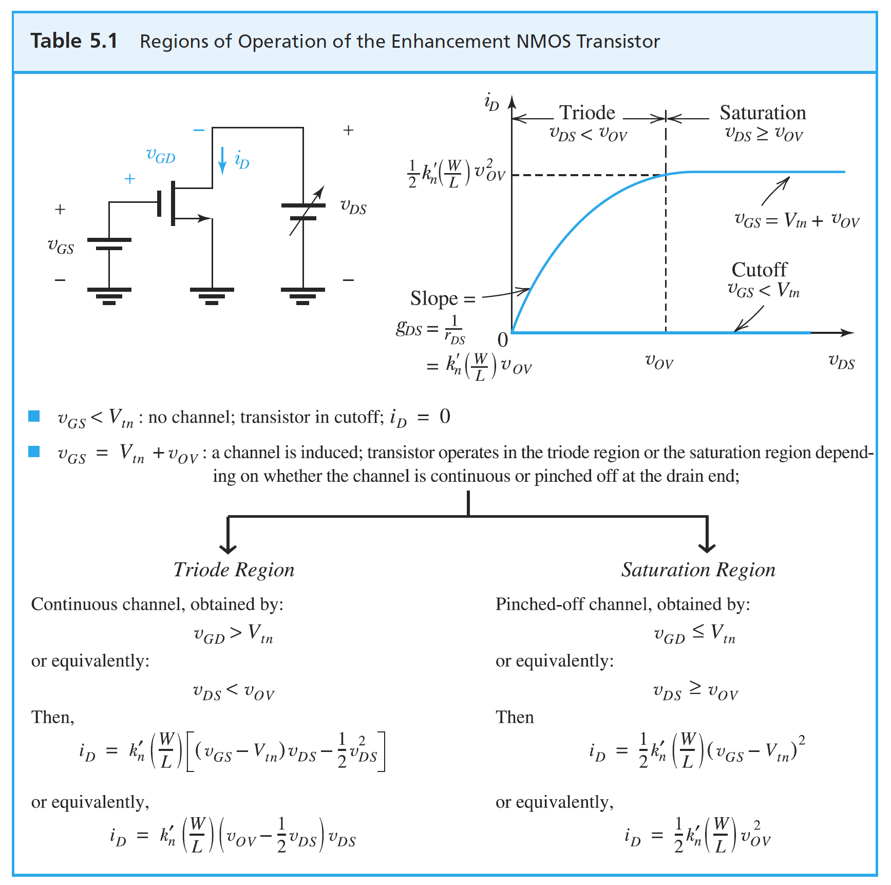

UNIT 2 · OFFICIAL EQUATION SHEET (FALL 2026)
ECE 321 Unit 2 Equation Sheet: MOSFET Fundamentals & DC Analysis
Official reference sheet for Lessons 8–14 covering MOSFET parameters, IV-characteristics in Cutoff, Triode, and Saturation, Channel-Length Modulation, physical device structure, SI prefixes, and DC bias network analysis.
1. MOSFET Symbols & Core Physical Parameters Lessons 8–9
Transistor Schematic Symbols
Threshold & Overdrive Voltage
Vt is the threshold voltage. Typical values: 0.3 V ≤ Vt ≤ 4.0 V.
(for SiO2, tox: oxide thickness).
Determined solely by manufacturing process and fabrication technology.
Aspect ratio W/L is the designer's primary sizing knob.
2. Modes of Operation & NMOS I-V Characteristics Lessons 8–10
Cutoff Region
Condition:
(i.e. )
No conductive inversion channel connects Drain and Source.
Deep Triode (Resistor)
Condition:
FET acts as a voltage-controlled linear resistor.
Triode Region
Condition:
Channel charge Source-side ∝ Vov.
Channel charge Drain-side ∝ (Vov − VDS).
Average charge: Vov → Vov − ½ VDS.
Saturation Region (Pinched-Off Channel)
Condition: and (Equivalently: )
Current is independent of VDS when channel length modulation is neglected.
VA: Early Voltage (intercept of extrapolated saturation characteristics on −VDS axis).
3. n-Channel MOSFET Physical Structure Device Cross-Section

4. SI Unit Prefixes & Double-Subscript Notation Reference Standards
SI Unit Prefixes
| Prefix | Symbol | Multiplier |
|---|---|---|
| atto | a | 10−18 |
| femto | f | 10−15 |
| pico | p | 10−12 |
| nano | n | 10−9 |
| micro | μ | 10−6 |
| milli | m | 10−3 |
| kilo | k | 103 |
| mega | M | 106 |
| giga | G | 109 |
| tera | T | 1012 |
| peta | P | 1015 |
Double-Subscript Notation Rules
The voltage between two nodes is defined as the potential of the first subscript relative to the second subscript:
5. NMOS Transistor DC Analysis Procedure Lesson 10
Four-Resistor Bias Network Equations
| Parameter | Formula |
|---|---|
| Gate Voltage VG | |
| Source Voltage VS | |
| Drain Voltage VD | |
| Gate-to-Source VGS | |
| Drain-to-Source VDS | |
| Gate-to-Drain VGD | |
| Overdrive Vov |
- Calculate open-circuit gate voltage VG using the voltage divider (since gate current IG = 0).
- Assume the device is operating in Saturation: .
- Solve the resulting quadratic equation for ID (select the root yielding VGS > Vt).
- Calculate VD and VS, then compute VDS = VD − VS.
- Confirm Saturation: Verify that (or ). If not, re-solve assuming Triode mode.